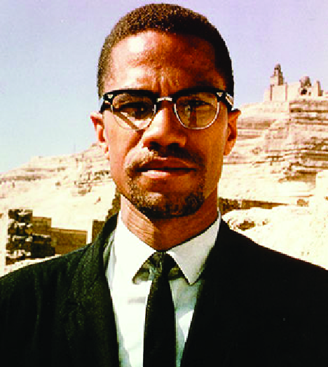

  <section class="longread" id="blacks">
    <div class="articlewrapper">
      <div id="title">the blacks in america</div>
      
      
      <div class="textwrapper">
        <p>The killing of Michael Brown, American of African descent, incited wide demonstrations all over the United States. As news resonated across the global media, in America the media was contradicting and having different point of views regarding this tragedy. At first many channels portrayed the incident as it was, but later on presented the event to the viewer as a mere daily criminal incident. And that the victim was a person who deserved to be stopped and imprisoned. And that the crime of the officer was nothing but a general mistake that had nothing to do with racism or religion. Examples of such a channel is the ‘Fox News’ that has always been supporting the Anglo- Saxon community, no matter the case. The same channel that supports the existence of a Zionist state in occupied Palestine. While some channels, for example ‘TV ONE’,  the reality on the ground:<br><br>Condemning and criticizing the actions of the police. They focused on presenting the problem as it was, and that it is a result of a much wider deep-rooted problem.</p>
        <div class="imagewrapper" id="imgblock1">
          
          
          
        </div>
        <p><br>The demonstrations against racism continued for some time, but eventually died down. During that time, I wanted to write about theses event, talk about the essence of the problem from the perspective of Muslims and Mujahideen. But circumstances did not allow me to do so. And in reality I didn&rsquo;t anticipate that the incident will take this toll, and the problem to be this deep. Within a short period, a similar incident occurred, the brutal killing of Freddy Gray. This made me research more on the subject of racism in America, and with that I write seeking assistance from Allah.<br><br>
        The killing of Gray shocked the Afro-American community. This is mainly because, it occurred while they were still mourning Michael Brown&rsquo;s death, and the manner in which Gray was killed. The incident was shocking. How do five police officers attack an unarmed person in such a manner? Hitting and strangling him to death. How can they say that the killing was not intentional, when the place and manner indicated clear intent? The Baltimore community was shocked; widespread demonstrations began across the city, alerting state security organs. They began by announcing a state of emergency, followed by deploying 5000 National Guard soldiers across the city in order to protect it, as they claim. Demonstrations sprawl</p>
        <div class="imagewrapper" id="imgblock2">
          
        </div>
        <p>to other states echoing the call for America to stop racism. The attempt by American leaders, top of them President Obama, in their addresses indicated sympathy and solidarity towards the black community. Maybe as an attempt to desensitize them from their anger. As people were still making their voices heard concerning Gray, another incident surfaced &ndash; the South Carolina Church attack by a white supremacist, killing nine Afro-Americans. Making it among the recent racist attacks against Afro-Americans. And from my own analysis, basing on the reasons, objectives and the historic background that gave rise to such incidents, I view that such attacks against Afro-Americans will continue to rise<br></p>
        <div class="imagewrapper" id="imgblock3">
          
          
          
          
        </div>
        <p>
        Many might be surprised as to why we are discussing about this subject matter, and ask why does a Mujaheed write about an internal American affair? We answer by saying: Many among the masses fall victim to the western media, which is persistent in portraying a negative image of Islam, with regards to Mujahideen. In contrast, racism has always been among the core issues in Islam. Many verses from the Quran and Hadith have explained the solution to such a problem. And we all know of the famous incident when the prophet was angry towards the companion Abu- Dhar. He addressed Bilal by saying, &ldquo;O Son of a black woman&rdquo;. This angered the Prophet ( &#65018; ), and he said &ldquo;do you despise him by his mother?&rdquo; Thus Islam does not allow even the smallest kind of injustice; be it by words or having contempt for a particular race. We the Mujahideen are a portion of the Muslim Ummah, we do not accept any type of oppression against our Muslim brothers among the Afro-Americans, or even the non-Muslims. And the opposite of oppression is Justice, and this is what we have been commanded by our religion. To be just even to those who oppose us in our religion. <br><br>
        Some people may ask, how can we address this community in such a manner, when they have participated in the killing</p>
        <div class="blockquote">“How do five police officers attack an unarmed person in such a manner? How can they say that the killing was not intentional, when the place and manner indicated clear intent?”</div>
        <div class="imagewrapper" id="imgblock4">
          
          
        </div>
        <p>of Muslims in Afghanistan, Iraq and other Muslim countries? This is true, and the article will prove that we are just even towards our enemy. And you shall understand the solutions to the root-cause of the problem, in a perspective that differs from the general mainstream media. A solution to the very core of the problem, not just part of it. The reader must understand the problem with regards to its historical background, so as to analyze and diagnose it in a practical detailed way. From here, we will go back to the books of history.<br><br>
        </p>
      </div>
      
      <div class="textwrapper">
        <p>
          The great discovery. A vast land rich in economic resources. A fertile and beautiful land, filled with all that is required in life. Full of different types of vegetation and animals. Rivers spread all over the country, beautifying the land, thus making different types of people to race towards it: to live a comfort, beautiful and stable life. Because of this, people from different countries migrated.
        </p>
        <div class="imagewrapper" id="imgblock5">
          
          
        </div>

        <p>But the majority of migrants came from Europe, who already had powerful military capabilities, equipment and war experience from their own land. The Europeans did not migrate with the intention of peacefully settling in this vast land. However, their intention was a violent forceful occupation: Controlling the land by killing and destroying the population. Ruling by all means possible. Statistics show that the European migrants killed around 70% of the indigenous population. They committed a genocide using the most destructive of weapons available at that time, biological weapons1. For a long period, the white European rule had been stable in America. Immigration from the African community who were searching for livelihood, continued to increase. The white community enslaved the Africans and took them as laborers. Treating them in an incomparable violent manner, even though some of the black immigrants were not slaves. The general view was that they were inferior, and deprived of the most basic human rights. Under the shade of the British colonization and its imperial rule in America over the 13 colonies, some laws began to stir up dissention among the people from different races; British, French, Dutch, Africans and others. Among the great opposition they had were the tough economic laws imposed by the British e.g. high taxes. And because of such pressure, in 1770 the American revolution began against the British. The slaves and free Africans fiercely fought side-by-side with the white, later on becoming an important element of power in the coming conflicts. In the year 1861, civil war broke out between the Southern Confederate States and the Northern Federal Union States, led by Abraham Lincoln.<br>
        </p>
        <div class="imagewrapper" id="imgblock6">
          
            
        </div>
        <p>
        The initial cause of war was the decision taken by Lincoln to emancipate slavery. Though the real motives was not emancipation, or defending humanity, or being Merciful and just as the American media portrays. But he was defending his political interests, by weakening the southern confederate states with this law and strengthening his power on the North by imposing political dominance on all states. This was confirmed by a congressman when he said &ldquo;...(slavery) cannot be neutral. As laborers, if not as soldiers, they will be allies of the rebels, or of the Union&rdquo; because of that, the United States and the congress accepted the emancipation of slaves as part of the entire war, a requirement to save the unity. Among the reason for taking the decision to emancipate the slaves after the war is the inevitable confrontation between the two races: This is because the Afro-Americans started demanding their rights. And any lagging behind in this issue will ignite a conflict in all states.<br>
        </p>
        <div class="imagewrapper" id="imgblock7">
          
          
        </div>
        <p>
        Mentioning these historical events, I would like to comment on some points:<br><br>
        Up to this stage, the Afro-Americans were not able to demand their rights, but succeeded in liberating themselves from slavery. <br><br>
        Liberation of Africans from the whites was not because of Lincoln&rsquo;s high morals, but because of the very existence of the Blacks and the power they had established for themselves, This led to their emancipation, which was because of &lsquo;mutual interests&rsquo; between the two parties. <br><br>
        The western media tries to suggest that President Lincoln freed all Black slaves, when among them they were some who were already free. These points can be proven by referencing to official historic documents. For example, with the announcement of the emancipation of slaves, 20,000 Afro-American soldiers joined the Union army during the war. This formed a main element in putting an end to the war, at the advantage of the Union. Another thing was that during the reconstruction era the blacks were racially segregated. There was discrimination, they were treated</p>
      </div>
      
      <div class="textwrapper">
        <p>
        as inferior and violently abused because of their race. And the oppressive Jim Crow laws are a witness to these injustices during this era. Despite of that, some of the Afro-Americans accepted the laws in order to protect themselves from the aggressive white supremacists. While others did not accept this prolonged oppression, and began to form civil rights movements, demanding justice and equality in politics, economic, self-sufficiency and absolute independence from the white. One of the movement was the &ldquo;Black Power&rdquo; movement, which restored some dignity to the Afro-Americans.<br><br>
        Those who live and travel</p>
        <div class="blockquote">“If you take a look at the educational opportunities, economic growth, political representation and job opportunities, you will find that most of the Afro-Americans are deprived from these basic benefits.”</div>
        <p>between the different states in America and interact with people in their daily lives, will discover that racism and discrimination still exist in the minds of the white. If you take a look at the educational opportunities, economic growth, political representation and job opportunities, you will find that most of the Afro-Americans are deprived from these basic benefits; Insufficient healthcare system, discrimination in housing benefits, law-enforcement injustices.
        </p>
        <div class="imagewrapper" id="imgblock8">
          
        </div>
        <p>
        The Afro-Americans are the main victims of these injustices. Thus we are not surprised when we see a series of criminal aggression against them occurring frequently in such a pace. But what is surprising is the continual high support of the Black-Africans towards the democrats in elections. The same party in power as before, and the same oppression and injustices towards the black continue to repeat themselves. What is more unfortunate is that the President is of the same race, who does not pay any attention to the injustices of his own people: Rather his greatest fear is his political position and his clinging to power. <br><br>
        </p>
        <div class="imagewrapper" id="imgblock9">
          
          
          
        </div>
        <p>
        The current Anglo-Saxon generation has been raised with this kind of arrogance mentality, arrogance towards all kinds of people &ndash; especially the Black Americans. And history will never forget their past sufferings. Therefore, when we read about the killings of Black youth by the police or the white supremacists, we have to examine &ndash;as they say in criminology- the objectives and psychological motives to these crimes. From here we can say that the main motives to these crimes is not gun violence, as Obama tries to portray. But the reality is that we cannot separate this violence with the fanatic white racists supremamists, which must be stopped by all means possible.<br><br>
        The solution to this fanaticism should not only be confined to America: This is because the same American oppression towards the Blacks today, is practiced towards other communities around the world. The same level of oppression is exercised against the Muslims today. Excersised by these racist white politicians, among them are Black politicians who are not real representatives of their community. And if they are not able to uphold their rights ,then how can they defend the rights of others?</p>
        <div class="blockquote">“Islam prohibits discrimination, demolishes social castes and unites Muslims as a single body. There is no distinction between Black and White, Arab and non-Arab except through taqwa (God fearing).”</div>
        <p>The American leaders, through their media, always try to display their innocence against racism. Being in the forefront in describing others as racists, e.g. the Nazi and the Aryan racists. But the fact is that they cannot escape from their past and present crimes.
        </p>
        <div class="imagewrapper" id="imgblock10">
          
        </div>
        <p>
        The Fanaticism and the American people&rsquo;s sense of dominance and subjugation towards other communities can never be censored by the American media. They instead resorted to changing terminologies: calling discrimination, caste, superiority over the people as political and military domination, but the result is all the same. And as Michael Brown and Freddie Gray were killed, then we have thousands of Muslims killed in Afghanistan, Pakistan, Iraq and Yemen. And the continuous killing of hundreds of Palestinians using weapons from the racist Americans.<br></p>
      </div>
      
      <div class="textwrapper">
        <p>
        O Afro-Americans, it is a pity that you play a part in this oppression against Muslims. You are the ones who elect those who promise to continue waging war with us in our lands. You are the ones who elect those who promise to protect Israel, who aggressively and unjustly occupy our lands. This is a historic chance for you to review your actions, and to take a stand against these crimes in the face of these fanatics. As you condemn you will be condemned. And as the say, whoever accepts injustice will be the first to be burnt by its fire. A Bright Future and Hope.
        </p>
        <div class="imagewrapper" id="imgblock11">
          
          
          
        </div>
        <p>
        Islam prohibits discrimination, demolishes social castes and unites Muslims as a single body. There is no distinction between Black and White, Arab and non-Arab except through taqwa (God fearing). These are the principles of Islam that we call the people to. In reality, I came across American demographic statistics and found out that a third of Muslims in America are Afro-Americans. And that Islam spreads fast among this community. Hence, we invite them to this religion, a religion that practically gives them justice from racial segregation. As it was just to Bilal bin Rabah, the Black habashi (Former Ethiopian slave), who became a master among the masters of Islam, and a commander among the commanders of Islam. Whosoever lives in the American society will find that Afro-Americans are much better than the whites in terms of morals and family responsibility. And this gives glad tidings and hope of changing the American reality.<br><br>
        From here we continue to send important messages , hoping they will change their situation and raise oppression over all:<br><br>
        Firstly: Qaidatul Jihad and the entire Muslim Ummah are against the oppression and injustices directed towards you. And whosoever is killed among you in our Jihadi operations, is justified according to us. This is because our Jihadi operations are defensive, even though they seem to be offensive as in September 11&mdash;which in context is a general defense on our Ummah, that has been assaulted by the Jews and supported by America.<br><br>
        Secondly: we want to hear your voices against the crimes committed by your government. We encourage you to form political groups in order to pressurize your government to lift the general oppression against you and to stop aggression towards Muslims. And condemn the support your government gives to Israel. From there we will take practical steps to avoid targeting you in our operations.<br><br></p>
        <div class="blockquote">“Qaidatul Jihad and the entire Muslim Ummah are against the oppression and injustices directed towards you.”</div>
        <p>
        Thirdly: Adding to the second point, we advise you to move out of big cities that represent the economy, politics or military strength of America like New York and Washington.<br><br>
        Fourthly: Rights cannot be earned except by force, your own history is a witness to this. With that, we advise you to confront this issue in two directions. 1. The first is a civil open approach, not military. Demanding your total rights, by pressuring your government using a soft approaches like; demonstrations, stage sit-in and civil disobedience. 2. The second approach is by forming small groups that will be responsible for assassinating, targeting these racist politicians.
        </p>
        <div class="imagewrapper" id="imgblock12">
          
          
        </div>
        <div id="footer">We at <span>Inspire</span>  bring to you military consultation, one may refer back to the previous issues to find appropriate military ideas.</div>
      </div>
    </div>

  </section>